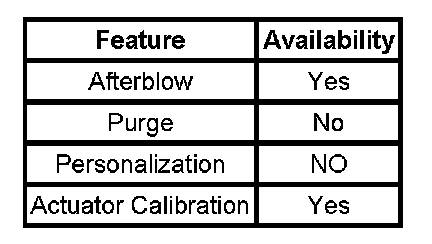

Air Delivery
AIR DELIVERY DESCRIPTION AND OPERATION
The air delivery description and operation is divided into 4 areas:
- HVAC Control Components
- Air Speed
- Air Delivery
- Recirculation Operation
HVAC Control Components
HVAC Control Module
The HVAC control module is a GMLAN device that interfaces between the operator and the HVAC system to maintain desired air temperature and distribution settings. The battery positive voltage circuit provides power that the control module uses for keep alive memory (KAM). If the battery positive voltage circuit loses power, all HVAC DTCs and settings will be erased from KAM. The body control module (BCM), which is the vehicle mode master, provides a device on signal. The HVAC control module provides blower, air delivery mode, air temperature settings and input signals to auxiliary HVAC control module. The HVAC system assembly receives power from battery input with ignition 3 voltage circuit as a backup.

The HVAC control module supports the features.
Auxiliary HVAC Control Module
The auxiliary HVAC control module provides blower, air delivery mode and air temperature settings. When the auxiliary position is selected, from the HVAC control module, inputs from this control assembly will be processed by the Aux. HVAC control module. If equipped with rear seat audio (RSA) the auxiliary HVAC system will support GMLAN.
Front Mode Actuator
The front mode actuator is a 5 wire bi-directional electric motor that incorporates a feedback potentiometer. Ignition 3 relay voltage, low reference, control, 5-Volt reference and position signal circuits enable the actuator to operate. The control circuit uses either, 0, 2.5 or 5-Volt signal to command the actuator movement. When the actuator is at rest, the control circuit value is 2.5 volts. A 0 or 5-Volt control signal commands the actuator movement in opposite directions. When the actuator shaft rotates, the potentiometer adjustable contact changes the door position with a signal ranging between 0-5 volts.
The HVAC control module uses a range of 0-255 counts to index the actuator position. The door position signal voltage is converted to a 0-255 count range. When the module sets a commanded, or targeted, value, the control signal is changed to either 0 or 5 volts depending upon the direction that the actuator needs to rotate to reach the commanded value. As the actuator shaft rotates the changing position signal is sent to the module. Once the position signal and the commanded value are the same, the module changes the control signal to 2.5 volts.
Auxiliary Mode Actuator
The auxiliary mode actuator is a 5 wire bi-directional electric motor that incorporates a feedback potentiometer. Ignition 3 relay voltage, low reference, control, 5-Volt reference and position signal circuits enable the actuator to operate. The control circuit uses either, 0, 2.5 or 5-Volt signal to command the actuator movement. When the actuator is at rest, the control circuit value is 2.5 volts. A 0 or 5-Volt control signal commands the actuator movement in opposite directions. When the actuator shaft rotates, the potentiometer adjustable contact changes the door position with a signal ranging between 0-5 volts.
The HVAC control module uses a range of 0-255 counts to index the actuator position. The door position signal voltage is converted to a 0-255 count range. When the module sets a commanded, or targeted, value, the control signal is changed to either 0 or 5 volts depending upon the direction that the actuator needs to rotate to reach the commanded value. As the actuator shaft rotates the changing position signal is sent to the module. Once the position signal and the commanded value are the same, the module changes the control signal to 2.5 volts.
Air Speed
Front Blower Motor Control Processor
The front blower motor control processor is an interface between front HVAC control module and front blower motor. The front blower control processor regulates supply voltage and ground circuits to front blower motor. The front HVAC control module provides a blower speed signal to the control processor in order to command the desired blower motor speed. The control processor uses the blower motor ground as a low side control to adjust the blower motor speed.
The blower motor forces air to circulate within the vehicle's interior. The vehicle operator determines the blower motors speed by placing the blower motor switch in a desired speed position or by selecting automatic operation. In manual operation, once a blower speed is selected, the blower speed remains constant, until a new speed is selected. In automatic operation, the HVAC control module will determine what blower speed is necessary in order to achieve or maintain a desired temperature.
As the requested blower speed increases, the following conditions occur:
- The HVAC control module increases the amount of time that the blower motor speed control circuit is modulated to ground.
- The voltage and duty cycle, measured between the blower motor speed control circuit and ground, decrease.
As the requested blower speed decreases, the following conditions occur:
1. The HVAC control module decreases the amount of time that the blower motor speed control circuit is modulated to ground.
2. The voltage and duty cycle, measured between the blower motor speed control circuit and ground, increase.
Auxiliary Blower Motor Control Processor
The auxiliary blower motor control processor is an interface between the auxiliary HVAC control module and the rear blower motor. The auxiliary blower motor control processor monitors supply voltage and ground circuits to the rear blower motor. The auxiliary HVAC control module provides a pulse width modulation (PWM) signal to the control processor in order to command the blower motor speed. The auxiliary blower motor control processor uses the blower motor ground as a low side control to adjust the blower motor speed.
The blower motor forces air to circulate within the vehicles interior. The vehicle operator determines the blower motors speed by placing the blower motor switch in a desired speed position or by selecting automatic operation. In manual operation, once a blower speed is selected, the blower speed remains constant, until a new speed is selected. In automatic operation, the HVAC control module will determine what blower speed is necessary in order to achieve or maintain a desired temperature.
As the requested blower speed increases, the following conditions occur:
- The HVAC control module increases the amount of time that the blower motor speed control circuit is modulated to ground.
- The voltage and duty cycle, measured between the blower motor speed control circuit and ground, decrease.
As the requested blower speed decreases, the following conditions occur:
- The HVAC control module decreases the amount of time that the blower motor speed control circuit is modulated to ground.
- The voltage and duty cycle, measured between the blower motor speed control circuit and ground, increase.
Air Delivery
Front Control
The HVAC control module controls the distribution of air by the use of recirculation and mode actuators. The modes that may be selected are:
- Defrost
- Defog
- Panel
- BI-Level
- Floor
The mode actuator is connected to the mode door by a cam type linkage system. Depending on the position of the door, air is directed through the HVAC module and distributed through various ducts leading to the outlets in the dash. If a fault is detected within the mode door travel, the HVAC control module will drive the actuator to defrost, which is a default position for the mode door actuator. Turning the mode door position to either defrost or defog positions, the HVAC control module will move the recirculation actuator to outside air reducing window fogging. When defrost/defog is selected, the A/C compressor is activated. The A/C compressor clutch will engage when ambient temperatures are above 3°C (38°F). A/C is available in all modes. Recirculation is only available in Panel and Bi-Level modes. The rear window defogger does not affect the HVAC system.
Auxiliary Control
The auxiliary HVAC system provides ventilation for the rear seat occupants. The rear seat occupants will exercise control of the auxiliary air delivery modes, air speed and the air temperature setting. The HVAC control module will have the ability to override the auxiliary HVAC control module by placing it in any position other than auxiliary.
The auxiliary mode switch in the HVAC control module allows the driver to direct the air flow in the rear of the vehicle between the floor, headliner, or a blend between the 2 options. Power is provided to both front and auxiliary HVAC control modules from I/P fuse block on the ignition 3 voltage circuit.
Recirculation Operation
The HVAC control module controls the air intake through the recirculation actuator. The recirculation switch closes the recirculation door in order to circulate the air within the vehicle. The outside air switch opens the recirculation door in order to route outside air into the vehicle. Regardless of the blower motor switch position, recirculation is available only in the Panel and Bi-Level mode switch positions. The mode switch must be placed in either the Panel or Bi-Level position before the blower motor switch is placed in the OFF position. When Defrost or Defog positions are selected outside air is circulated to the windshield to reduce fogging. If the recirculation switch is pressed into the ON position when the mode switch is in an unavailable mode position, then the recirculation switch LED will flash 3 times.
Remote Start
Remote Start Activation
The following describes the HVAC control head functionality upon receiving the remote start active serial data message and a power mode status is set to off/awake. During remote start on the manual HVAC system the blower motor, mode doors, temperature doors, recirc door and A/C request will be set to the current setting on the control panel when the vehicle was last turned off. The rear defrost will be activated and the heated seats will be disabled.
Remote Start De-activation
When the remote start is exited, GMLAN power mode equals run mode or remote start engine. In the case of manual settings, the displays will revert to the actual state of operation of the features, on the basis of their normal control algorithms.